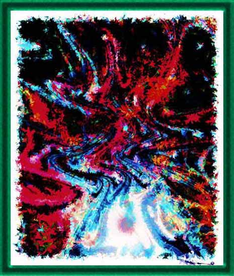

| A Butterfly-In-Itself. Mixed media, filters, and effects. As I pointed out in Part II of The Dynamic Psychological Field, reality--things-in-themselves--is made up of a dynamic mixture of colors, lines, and lights and darks. We make sense out of this confusing and ever changing reality through our concepts, which carve reality into meaningful images for our perception. Well, this painting is that of this reality underlying what we call a butterfly. How do I know? Trust me. |